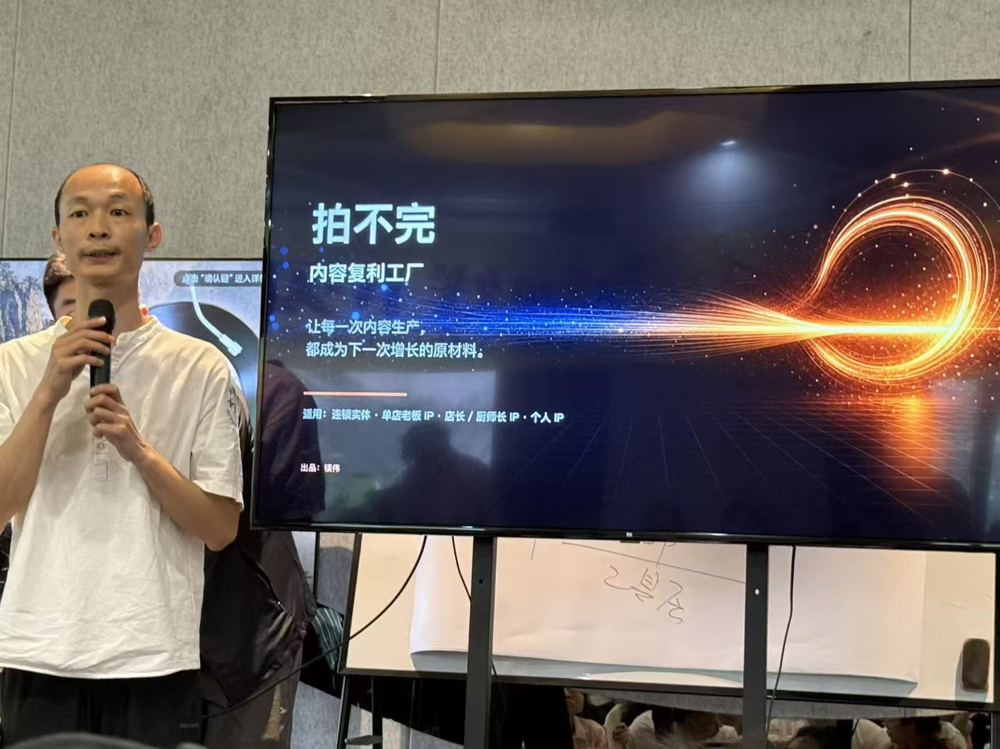
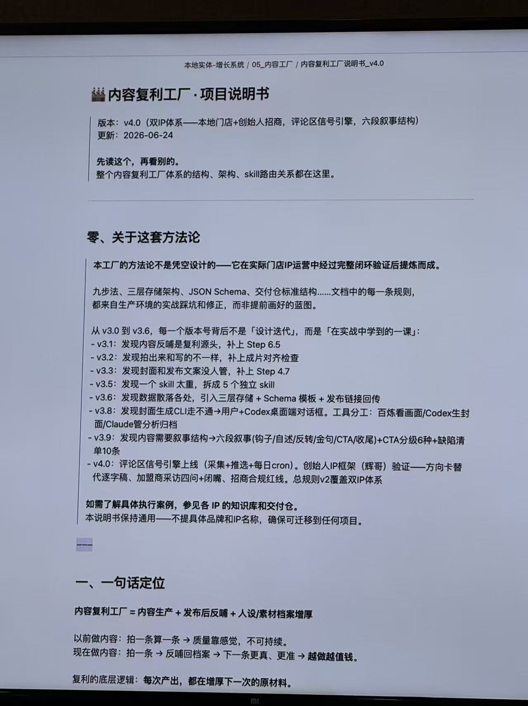
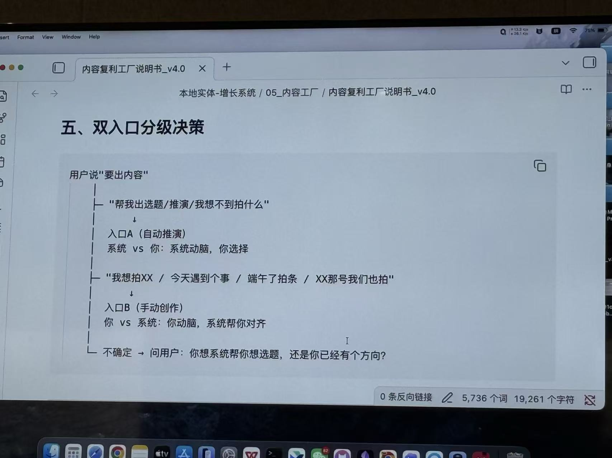
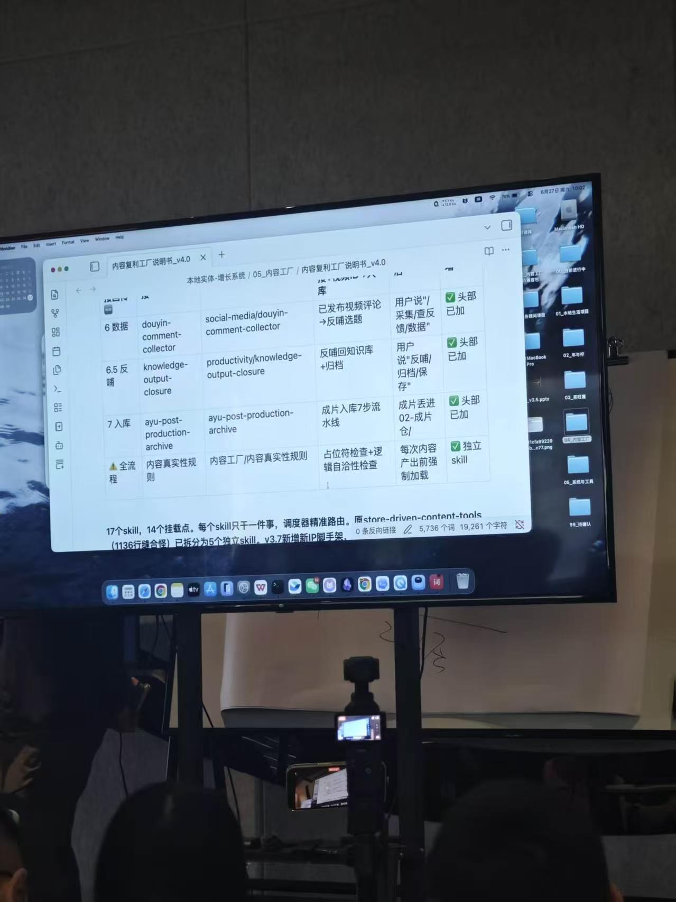

工具层
单点调用，每次重来。
REEL 01 / 2026年6月27日课程可视化总结
不是追工具，而是把任务、判断、内容和审核标准，沉淀成可运行的系统。

判断自己还在用工具，还是已经在搭系统。
诊断、SOP、实现、复盘，四步跑通。
每次发布，都为下一次增长蓄料。
核心框架
这不是概念表，而是一张定位图：你现在在哪一层，下一步该往哪走。
单点调用，每次重来。
有 SOP，能复用。
AI 有职责，能交付。
多岗位协同，有质检。
持续产生可量化价值。
现场方法论
内容不是拍完就结束，而是持续增厚下一次增长的原材料。

内容复利 = 内容生产 + 发布后反馈 + 人设/素材档案增厚。

没方向时推选题，有方向时补结构。

调度器判断步骤，执行器只做一件事。
系统拆解
别做万能模块。把诊断、SOP、生产、审核、回流和复盘拆开。
business-task-diagnosis选出靶心任务。
workflow-sop-builder写清输入、输出与标准。
course-summary-html课程资料转成页面。
review-quality-gate审核事实与质量。
content-compound-factory发布后回流素材。
persona-material-archive沉淀个人风格。
memory-dreaming定期整理记忆。
roi-workflow-review复盘时间与收益。
落地方案
先选一个高频任务，跑通，再升级。
列出重复、耗时、可标准化的工作。
先做课程内容复利工作流。
写清输入、输出、标准和打回规则。
稳定后再加岗位、日志和 ROI。